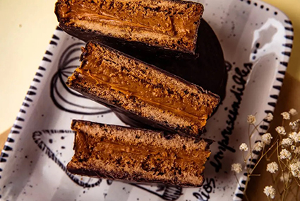

Postre-Alfajor Marplatense

Clásico, irresistible y con ese sabor que nos transporta directo a la costa. El alfajor marplatense es mucho más que una golosina: es una pequeña obra de arte rellena de dulce de leche y bañada en chocolate. Con esta receta vas a poder prepararlos en casa y disfrutar ese sabor inconfundible que tanto nos gusta.
¡Vamos a ponernos manos a la masa y endulzar el día!
Receta para cocinar un Alfajor Marplatense en tu casa
Ingredientes
Chocolate cobertura semiamargo 250 g
Manteca de cacao 60 a 80 g
Ron Cantidad necesaria
Dulce de leche Cantidad necesaria
Miel 50 g
Almidón maíz 100 g
Harina 0000 400 a 500 g
Manteca 200 g
Extracto de malta 40 g
Azúcar 200 g
Bicarbonato de amonio 5 g
Bicarbonato De Sodio 5 g
Cacao amargo 20 g
Huevos 2 Unidades
Agua 50 cc
Pasos
Para comenzar, en una batidora con lira blanqueamos la manteca con el azúcar azúcar y la miel.
Perfumamos con la ralladura de 1 naranja y de 1 limón. Agregamos esencia de vainilla y una pizca de sal fina.
Incorporamos los huevos y continuamos batiendo.
Tamizamos la harina, la fécula de maíz, el cacao amargo, el polvo de hornear y el bicarbonato de amonio.
Incorporamos los secos tamizados al cremado y trabajamos la masa hasta que haya tomado una consistencia homogénea.
Terminamos de unir con las manos, le damos forma y dejamos enfriar.
Una vez que la masa esté fría, la estiramos hasta obtener 5 mm de espesor.
Llevamos a un horno precalentado a 180°C durante 10 minutos.
Retiramos, dejamos enfriar y, luego, unimos las tapas con dulce de leche previamente aligerado con ron.
Bañamos con chocolate para alfajores derretido a baño maría.
Dejamos templar a temperatura ambiente y almacenamos por 48 como mínimo para consumir.
Tus alfajores marplatenses están listos: con ese baño de chocolate tentador, el relleno cremoso de dulce de leche y esa textura que se deshace en la boca. Un clásico argentino que ahora podés disfrutar hecho por vos, perfecto para acompañar unos mates, un café… o simplemente para regalarte un momento de puro placer. ¡Que los disfrutes!
Link a la receta de El Gourmet